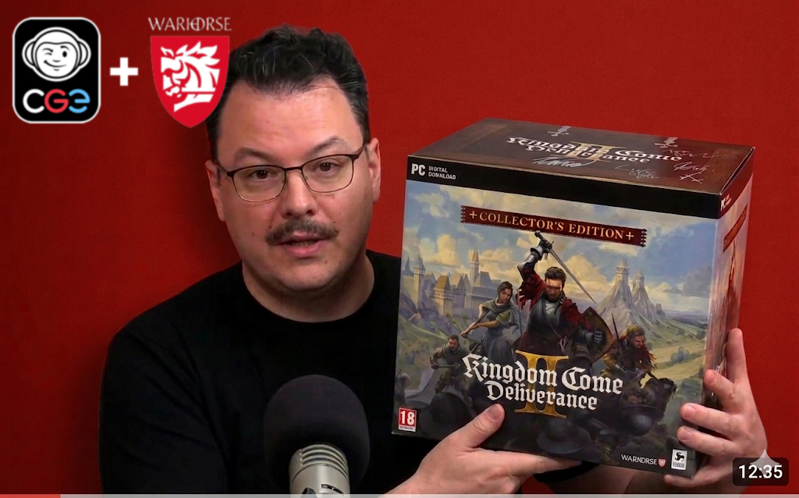

Jindrův příběh opět na stole!
Fanoušci českých her se dělí na dvě velké skupiny. Jedna obdivuje stopu, kterou čeští vývojáři zanechávají ve světě digitálních her. Tam je dnes hlavní hvězdou firma Warhorse, dvou dílů jejich velkolepé středověké simulace Kingdom Come Deliverance se prodalo více než deset milionů kopií.
Nemalá skupina českých patriotů však nedá dopustit na deskovkové CGE, jenž stojí za celosvětovým party bestsellerem Krycí jména, ale i za úspěšnými složitými hrami, jako jsou civilizační hra Through the Ages nebo vesmírný hit posledního roku SETI. Tyto dvě hry nezmiňujeme náhodou, protože právě jejich autoři, Vlaada Chvátil a Tomáš Holek, oslovili Dana Vávru, který stojí za oběma díly veleúspěšné Kingdom Come, a společně vyvinuli deskovou podobu této hry.
Jak spojení tří slavných designérů dopadlo? Co vznikne spojením Vávrova vypravěčského talentu s Chvátilovým a Holkovým citem pro figurky a kostky? Na to jsme se zeptali Petra Čáslavy, herního vývojáře a žurnalisty, který měl možnost zahrát si vzniklé dílo na jedné z utajovaných testovacích akcí CGE.

Zdá se tedy, že CGE navázalo tam, kde Boardcubator před lety neuspěl. A zdá se, že to bude plnohodnotné pokračování zrušeného projektu. A nám nezbývá než těšit se na řádnou dávku deskovového příběhu!